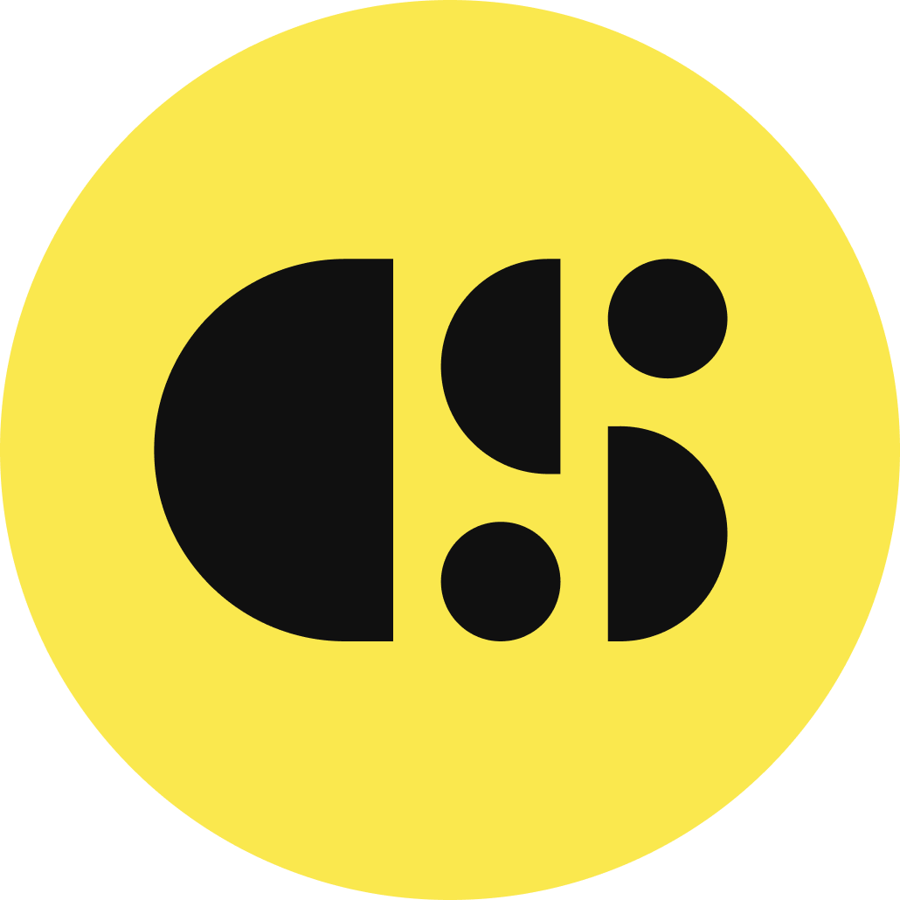
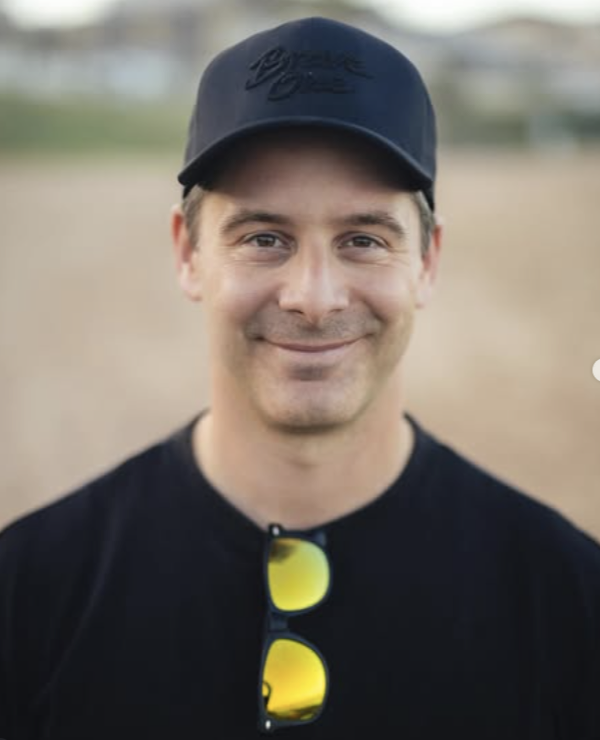
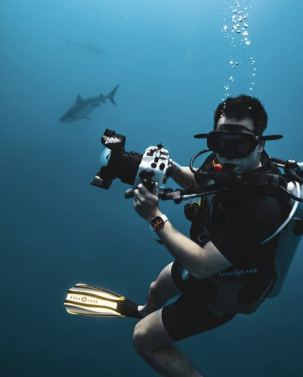
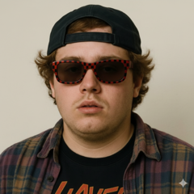
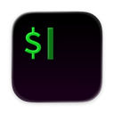
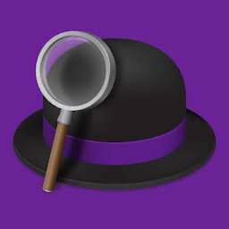
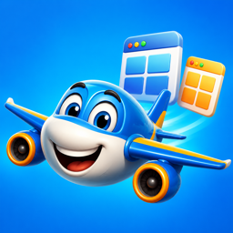

FileAgentsSpecial SFF STUDIO · 20262:00 PMBuilding & Investing
in the AI Era

I build things, invest early,
and keep it essential
Swiss. Builder, early-stage investor, pilot, photographer, dad. First company at 14 — couldn't stop if I tried.
Startups backed
across Tomahawk.VC + Tenderloin Ventures
- Build — DFINITY · Sendtask · Liquity
- Invest — Tomahawk.VC · Tenderloin Ventures
- Studio — Code & State

One thing you've recently automated
Name · what you're building · one thing you automated in your business lately.
Even a small one. I want to see how far each of you already runs on AI — that tells me where to take the rest of our time.
Investing in the AI Era
Meet Tommy, my fund analyst

A runtime, not a chatbot
Tartare spawns him when a trigger fires and logs every step — auditable and repeatable, not a chat window.
Pre-loaded with the fund's brain
Thesis, the 40/30/30 rubric, the whole portfolio — injected at startup. He begins ready, not briefed.
An automated trigger chain
Email → Missive → Thea attaches the deck → Tommy picks it up in ~60 seconds. No human touch.
Teammates in their lanes
Kestrel red-teams blind · Thea drafts & sends · then he closes the loop into Notion + Slack.
From inbound to investment case
It lands
Email → Missive → Thea flags → Tommy picks up. Every deal, first.
Triage + research
Auto-decline the no's; go deep on the rest, 30–90 min each.
Founder · Market · Moat
Weighted. PURSUE ≥4.0 · DISCUSS 3.0–3.9 · PASS <3.0.
Kestrel attacks it
Blind 1–5 counter-memo. Then outreach waits for my yes.
Pull up a real case live — it all lives in Missive (open the music-licensing one, it's the richest thread):
How we score a company
Tommy runs the case. I just decide.
14 minutes of Tommy's time. 90 seconds of mine — I read the conclusion, agree with the PASS, hit send.
What landed — and how Tommy read it
Then Kestrel attacks it — blind
- A real, verifiable problem — an industry-wide licensing gap, not a niche complaint.
- Genuine technical depth — integrates at the video platform's rights-infrastructure layer; nine years to build.
- Label equity stakes create supply alignment and real switching costs.
- Brand vertical shows live demand — six figures already invoiced to early customers.
- Capital-efficiency failure — £18M across five rounds to reach £1.43M ARR. A nine-year stall.
- Exit math fails — public comps trade ~8× revenue; £300–500M needs 15–25× growth.
- The moat is a margin trap — the labels control any exit and the margin ceiling.
- Misaligned cap table — the last round was a steep down-round: prior investors' verdict, in writing.
The reply I sent — and what came back
Thanks for the detailed walkthrough — you've built something technically real that nobody's managed in nine years, and the brand-licensing angle is genuinely interesting.
We're going to pass. The math doesn't work at this entry: £18M+ deployed to reach £1.43M ARR isn't a seed story, and the comps don't support a £300–500M outcome from here. The label equity and change-of-control structure also caps the margin and the exit — structural, not solvable with this raise.
Wishing you the best with the round.
— Cédric
The answers confirmed the read — they didn't change it. A clean pass, fast — and the founder got a real reason, not silence.
What I look for in AI-era companies
The tell — “what did you personally ship in the last 30 days, with how many people?” The answer takes 30 seconds, or it doesn't exist.
The one signal — and why we pass
My single best predictor: what did they ship, close, or learn between two conversations?
More predictive than the deck. More than the metrics. A founder who shows up to call 2 with two new customers beats one who polished the slides.
Kestrel scores blind — never sees Tommy's number first. Converge, and it's a strong yes; diverge, and that gap is the whole conversation.
- Capital-efficiency catastrophe — raised £18M, ~£1.43M ARR. Exit math never closes.
- The multi-miracle deck — needs four things to all go right. P(all four) ≈ 0.
- Distribution gap — great product, no credible way to reach a customer.
- Valuation before evidence — $20M+ pre, zero customers, nothing shipped.
Build an agent together
The agent contract
OWNS: when __ , do __
INPUTS: _________
STEPS: 1) __ 2) __ 3) __
OUTPUT: what + where
NEVER: _________
ESCALATE: when __ → me
FIRES: on __ (trigger)
- Inbound lead → 5-line brief
- Weekly competitor scan → digest
- Support FAQs → drafted replies
- User interview → 3 insights
A good agent looks like a good job description — not a clever prompt.
Building in the AI Era
Meet Spark, my studio operator
- Discover — signals → ideas against a thesis
- Validate — cheapest test that could change our mind
- Build → spin out — winners get their own repo + CEO
The whole fleet is orchestrated by Tartare — a platform I built to run agents like a team.
How we ideate & validate fast
Signals → ideas
HN Show HN, IndieHackers, live SEO (Ahrefs KD). Against a thesis.
One falsifiable bar
Name the ICP in a sentence. Write the kill threshold before spending.
2-wk prototype
Cheapest test that changes our mind — not "can we build it?"
Own repo + CEO
Winners spin out into their own company. The factory moves on.
Validate cheapest-first: ask the room → check live SEO → $500 ad test → only then build.
Our edge is the kill rate, not the hit rate.
Live: metered billing for API-first SaaS
I turn lessons into principles
Every time something works — or burns me — I write the lesson down as a principle I can reuse.
The list matters less than the habit of building it. Reflect, distill, reuse.
…and there's one more example of this habit sitting right in front of you. Next slide.
- Say no to almost everything.
- Start with the problem, not the solution.
- Scale through agents, not headcount.
- Speed and focus beat resources.
The rest live at cedricwaldburger.com.
Efficiency isn't doing more — it's doing less, better.
This deck was built by Thea
Every slide, every line of copy, the layout, the code — built by Thea, my personal agent. I gave her the brief and we argued about wording. I never opened a design tool.
Why it looks like this: the retro-Mac frame, because a computer you boot up is a company now · black-and-white, so the one yellow thing per slide is the point · demo-first, because showing beats telling.
The talk about building with agents was built by one. That's the whole point.
My toolkit
Wispr Flow
I talk, it types. Most of my input is voice.
Claude + Code
My agents — and how I build them.
ChatGPT
Second opinion, quick lookups.

iTerm2
Where the work happens.
Missive
The shared inbox my agents work inside.
Fathom
Auto notes + transcripts.

Alfred
Keystroke everything.
Franz
Every messaging app in one window.

WinMan + hi-res
~200 lines of Swift: window snapping + a hi-res display mode.
Keyboard-first, voice-first, and a few tools I wrote myself in an afternoon. The bar to build your own has never been lower.
Open discussion
Take it any direction — investing, building, agents, the journey. Ask the one you actually came with.
Or let's get practical: build your agent live, or run a validation on your idea together.
How to use me
- Check-ins — decisions, not status
- Office hours — pricing, hiring, raising, GTM
- My network — customers, talent, co-investors
- Building with agents — ask me about Tartare, the platform that runs my fleet
Excited to talk: AI-native operating, zero-to-one, and what makes a fundable pre-seed.
cedric.waldburger@tomahawk.vc · cedricwaldburger.com
Let's build. — Cédric